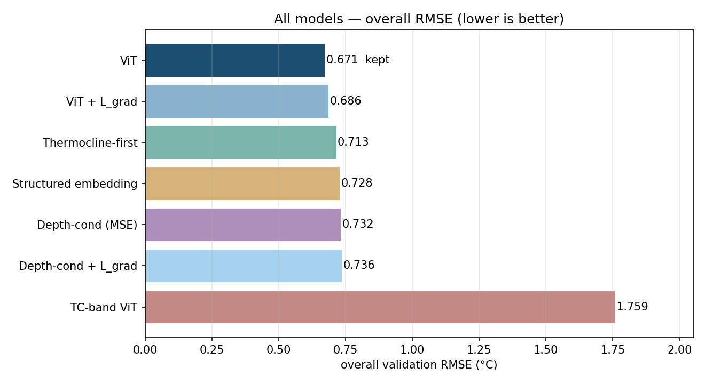
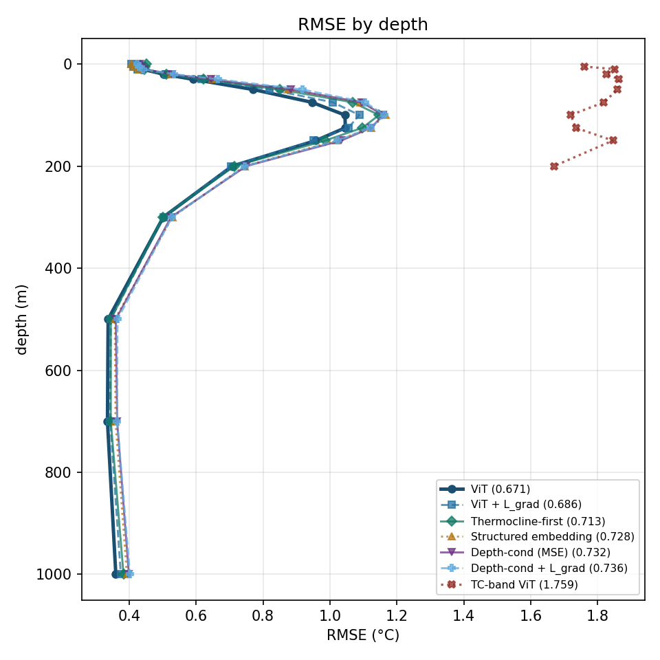

OceanEmbed
SIH PS 26066
Reconstructing Subsurface Oceans
Transforming 2D satellite surface observations into 3D subsurface temperature profiles using advanced representation learning.
The ocean is vast. Data is sparse.
Direct measurements of subsurface temperature rely heavily on in-situ systems like ARGO profiling floats. Their spatial and temporal coverage is simply insufficient for generating continuous, basin-scale subsurface fields crucial for monitoring marine heatwaves, ecosystems, and climate variability.

Satellite Embeddings.
Surface variables—SST, Salinity, Sea Level Anomaly, and Currents—contain indirect signatures of deep ocean processes. A Vision Transformer learns a compact satellite embedding and reconstructs the vertical temperature structure purely from orbit.
High-resolution continuous mapping.
Profiling from 0m down to 1000m.
SST, SSS, SLA, Currents, and Winds.

Live Colormap Maps
Continuously streams North Indian Ocean surface fields and ViT-predicted subsurface temperature as filled colormap maps (same style as training figures).
cd web && python live_server.pythen open
http://127.0.0.1:8765Surface grids + ViT predictions from the training cube, rendered as continuous colormaps.
Model Simulator
Interact with the models to view 3D reconstructions over the North Indian Ocean.

True vs Prediction (100m depth)

Validation Profile Comparison

RMSE across 15 depth levels

Overall validation RMSE — ViT kept, others dropped

RMSE vs depth — all trained architectures

Error profiles used to drop worse models